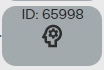
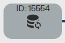
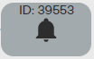
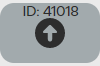
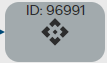
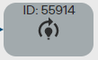
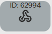
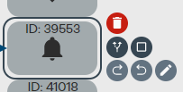
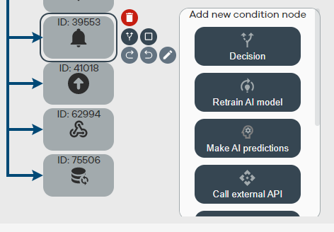

The actionflow editor works as an BPMN editor and is made for developpers and data scientist to work with the editor to make the site interactive and to calculate and predict on the go.
The actionflow editor works on a few principles that are handy to understand for debugging and communication.
A condition node is the square that is visible when adding a new type of task from the addwindow. the condition node exists out of a square and an icon representing what type of condition node it is.
The decision node defines a point where the API needs to make a decision for the worker on what task to execute next. in the decision node you can also input settings to define where to go when a certain statement is met. you can see this here:
To help creating clarity in you actionflow you can create notes with descriptions within them to see what a certain condition node is for and what script is being used for example
Global settings are made to send data that will be default to the worker. by using global data you can for example define a collection that you always wish to update when the action flow is ending.
Using AI prediction you can use a AI model to create a prediction on the data you wish to execute.
By using this you can let a custom python script excute
You can send a notification to one of the following: Mail, SMS, Whatsapp, Site notification. This will create a notification to notify the person you wish to contact about the actionflow.
Based on conditions you can either insert or update a record in a collection
You can call an external API and the return will be saved as a temporary variable to be able to execute with the actionflow
it can be the case an AI model needs to be retrained by calling this function this can be automated
You can use a webhook to send a message or call a function on a site to update a datatable for example.
you can edit an actionflow by using drag and drop. you can move the conditions around and can use to arrows to see what the flow is. to edit a condition node you can select the node by clicking on it and then using the addwindow if wanted.
Adding a new condition node
for editing the variables of a node you can click on the icon to open a popup to allow editing of the node.